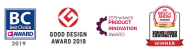
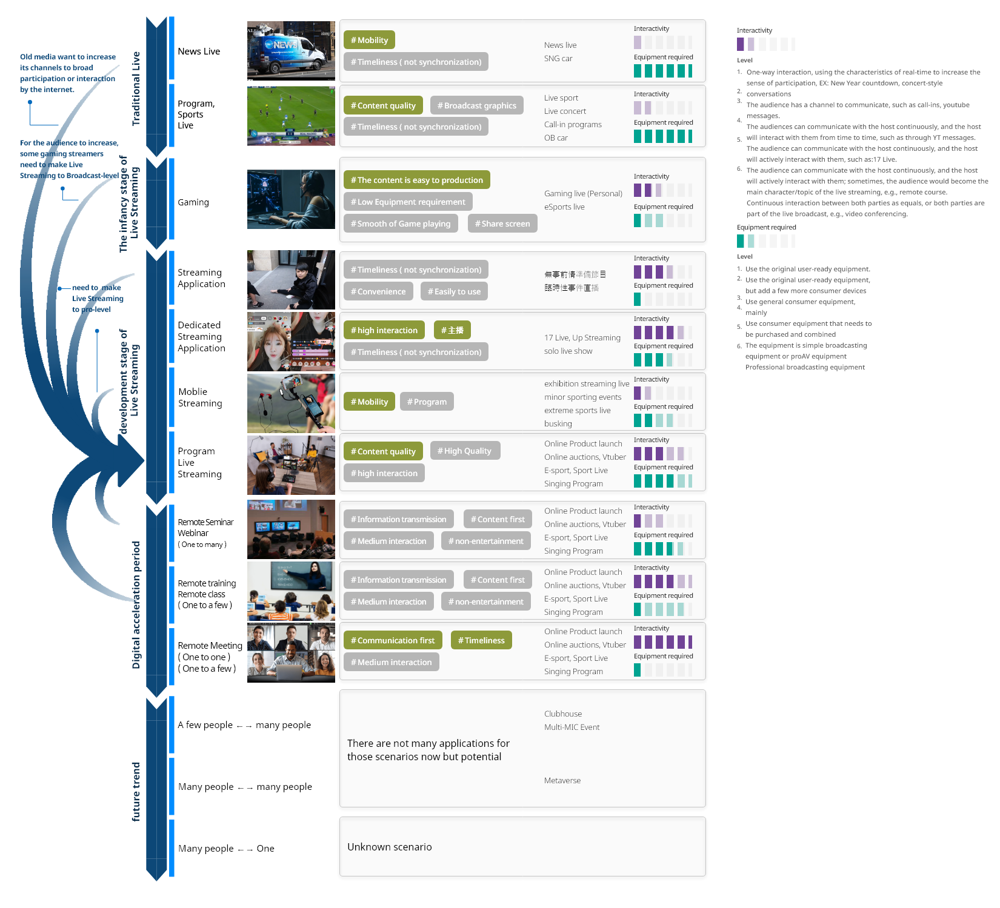
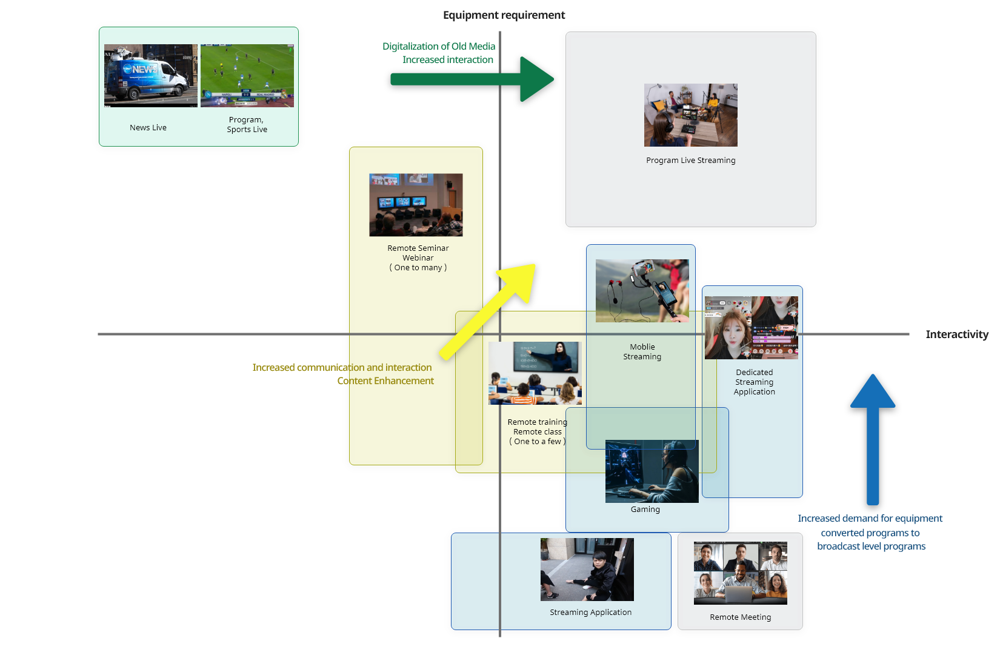
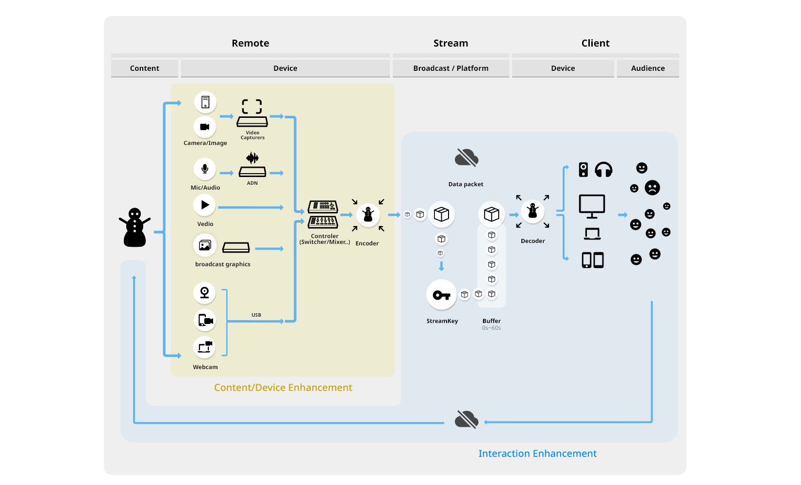
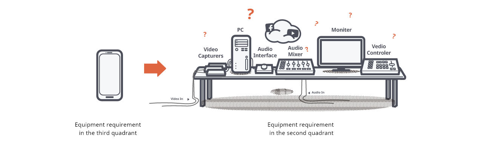
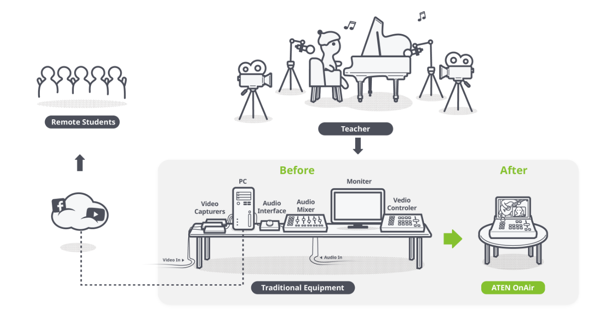
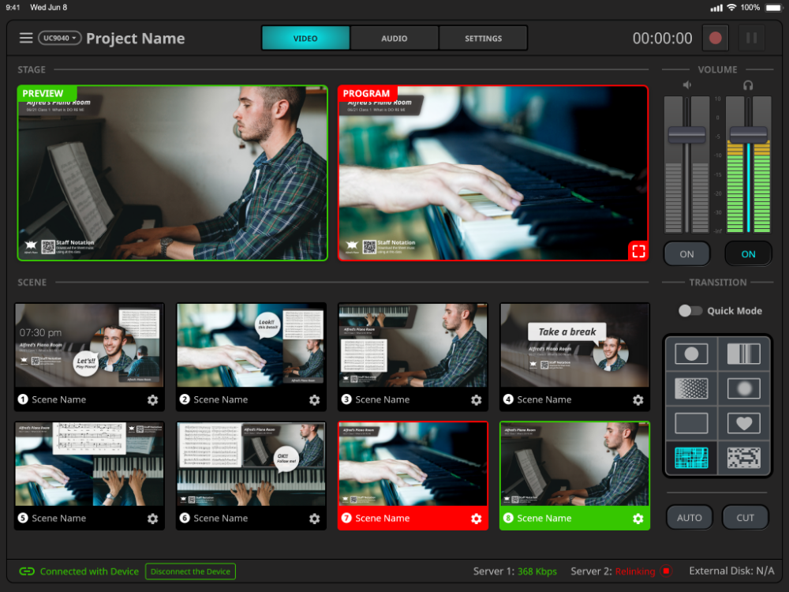
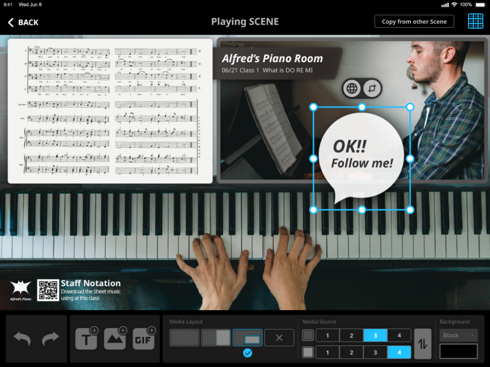
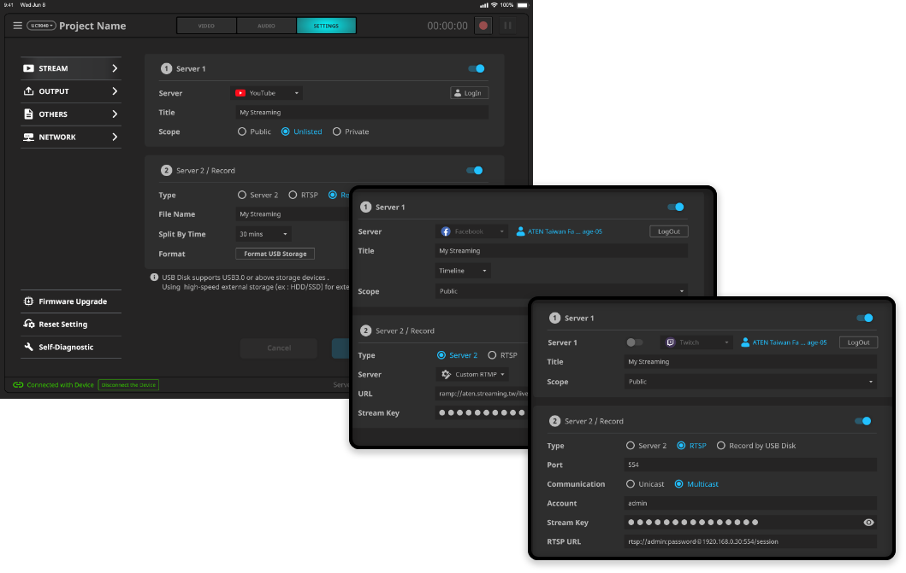

2020 - 2021
This series is a highly versatile product that allows users to create pro-level live productions in various situations. This includes live lectures and conference production to small, personal YouTuber-style shows. These series include 2-grade products and 3 OEM products. This project accomplished the mission of developing new product lines in the consumer-grade professional video and obtained 10 million in revenue for the company, which was the highest sales volume in that year, and won many international awards.
# Gain knowledge about the industry of Live streaming and study its trends # Define the scenario, target audience, and find their pain point with researchers. # Create a software requirements specification and maintain it with another designer. # Build and maintain UI flow, GUI spec. # Create templates to assist sales
We collected and categorized all common types of webcasting, and based on the historical development and recent changes in webcasting, we divided it into the following stages and list the characteristics of each. We found that the level of interaction and equipment expertise are the two key technically essential points of this industry, and there are different solutions in the market based on these two points. Finally, from the development process, we found that almost all types of live streaming are evolving towards increased interactivity and broadcast level for some reasons, namely the Program Live Streaming category in the figure.
By converting the development process into four quadrants, we can see the trend flow more clearly, respectively; the old media want to increase its channels to broad participation or interaction by the internet. It is towards the right. And the new media recently started to move upward, which means the increased demand for equipment and converted programs to broadcast-level programs. Finally, remote education and seminar, which are increasing in the covid-19, need improved communication, interaction, and rich content, which means the need for equipment requirement and interactivity are increased.
Live streaming looks simple, but there are very complex technologies behind it. We can see from the technical analysis chart that the technology of interaction is mainly in the hands of the platform, which is not our strength. Still, integrating the relative front-end devices is our strength, so we focus on the content and equipment.
Nowadays, most people start live streaming directly from a cell phone or laptop, but if you want to go to the next level, you will encounter many technical difficulties at once
The number of devices is exponentially increasing, and different video and audio sources require different cables and adapter devices, so setting up the devices will require more professional knowledge. In addition, the number of pieces of equipment connected is easy to make mistakes during live streaming.
To make good programming, it needs professional functions and knowledge of the broadcasting industry, as well as the support of experienced staff such as directors, sound controllers, and graphic stuff
This is the responsibility of the Master control in the traditional broadcasting industry, controlling its many channels, which requires a great deal of professional knowledge.
Professional live streaming requires many devices; we work with the PM to develop a corresponding i/o to complete all functions in one machine, significantly reducing the difficulty of connecting devices. Take the following picture as an example of a music teaching situation. Initially, many devices were needed, including Video capturers, Audio mixers, Audio interfaces, Controler, etc., and professional hardware knowledge was required. However, afterward, we only need to connect all the devices we want to broadcast to one device to complete the installation.
Make the professional director's preview and switching function easier, allowing users to easily switch and monitor each screen through their iPad or computer.
Innovative scene-based operations reduce the need for streaming live workforce to achieve broadcast-quality programming. Easy to use word cards and complete multi-camera screen processing.
Integrate common live streaming channels and stream them through a simple UI, including support for Oauth, Stream key RTDP, and common online platforms, and also help customize live streaming to other platforms
